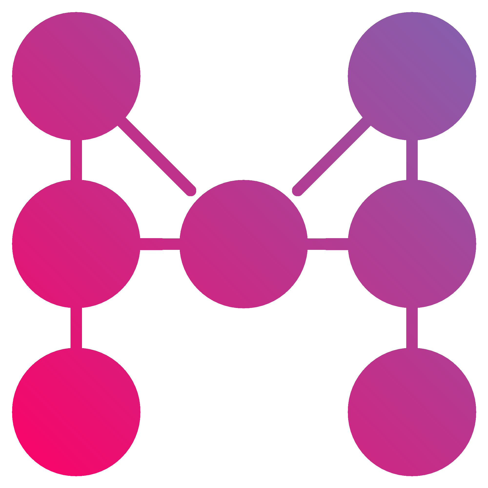

ШНМО
СПИСОК ПРЕДМЕТІВ
Далі наведено орієнтовний список предметів ШНМО цього року. Сподіваємось, він Вас зацікавить. Зверніть увагу, що окрім предметних занять на Вас чекатимуть додаткові івенти та лекції. Наш точний розклад ще в розробці, однак ми ґарантуємо, що ШНМО 2022 відбудеться вже після ЗНО (в липні-серпні 2022), буде протягом 2-3 тижнів (з вихідними днями), а в день навантаження буде не більше 2 пар (за рідкісним вийнятком 3).
Перегляньте також як подавати заявку.
КОМП'ЮТЕРНИЙ БЛОК
Яка ж Школа Науково-Математичних Обчислень без обчислень? Цей блок має на меті посилити ваші знання про найнижчі рівні програмування (тобто як обробляються та зберігаються дані та чому не варто часто використовувати ділення), після чого ви зможете дізнатися про ітеративні методи, задачі машинного навчання та моделювання. Працювати ми будемо в основному в популярному для науковців середовищі - Jupyter.
- Ефективні обчислення
- Наукові обчислення та машинне навчання
- Дискретне моделювання. Автомати
- Ознайомлення з мовою Julia. Краще за Python?
- Тензорні мережі та алгоритми
МАТЕМАТИЧНИЙ БЛОК
Цей блок безумовно можна вважати найважливішим, адже на ньому ґрунтується матеріал інших блоків. Ви зануритеся глибше шкільної програми з математики, опанувавши основи "вишмату". Але якщо Ви вже знаєте, що таке матриця, то чому б не повторити?
- Числові послідовності. Основи матаналізу
- Векторна алгебра
- Теорія ймовірності
- Похідна функції багатьох змінних. Інтеграл
НАУКОВИЙ БЛОК
Усе вищезгадане не має багато прикладного сенсу, якщо не розуміти, що ж ми моделюємо чи обчислюємо. Щоб поставити добрий чисельний експеримент потрібно ще знати фізичні закони та трюки.
- "Що обчислюють вчені?"
- Нелінійна динаміка та хаос
- Лагранжева механіка та моделювання
- Метод віртуальних переміщень